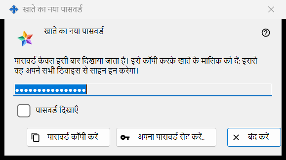
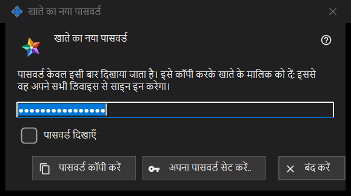

खाते का नया पासवर्ड
यह किस लिए है
एक्सचेंज सर्वर के खाते का पासवर्ड दिखाता है या माँगता है, तीन तरह से: बनाया गया पासवर्ड, जिसे प्रोग्राम ने अभी बनाया है, एक ही बार दिखाया जाता है (यही तस्वीर वाला रूप है); लिखा गया पासवर्ड, जिसमें विंडो आपसे आपका अपना पासवर्ड माँगती है; और सहेजा गया पासवर्ड, जो इस पीसी पर रखा पासवर्ड दिखाता है। यह Share Manager में स्थानीय एक्सचेंज सर्वर की सेटिंग में खाता जोड़ें.., पासवर्ड रीसेट करें.. या साझा पासवर्ड सेट करें.. के बाद खुलती है, और व्यवस्थापक के पासवर्ड वाले सवालों से भी।


इस क्रम में
- बनाया गया पासवर्ड: पासवर्ड कॉपी करें दबाएँ (पढ़ने के लिए पासवर्ड दिखाएँ पर निशान लगाएँ), पासवर्ड खाते के मालिक को दें और बंद करें दबाएँ।
- खुद का पासवर्ड: अपना पासवर्ड सेट करें.. दबाएँ या पासवर्ड खुद लिखूँगा चुनें, नियम पर खरा उतरने वाला पासवर्ड लिखें और पासवर्ड सहेजें दबाएँ।
- सहेजा गया पासवर्ड: खाता चुनें और खातों की सूची में पासवर्ड दिखाएँ.. दबाएँ।
तत्व
बनाया गया पासवर्ड (तस्वीर में)
शीर्षक: खाते का नया पासवर्ड। परिचय में लिखा है: पासवर्ड केवल इसी बार दिखाया जाता है। इसे कॉपी करके खाते के मालिक को दें: इससे वह अपने सभी डिवाइस से साइन इन करेगा। फ़ील्ड छिपा हुआ और केवल पढ़ने के लिए है; पासवर्ड दिखाएँ उसे सिर्फ़ इसी विंडो में दिखाता है। पासवर्ड कॉपी करें पासवर्ड को एक सुरक्षित रास्ते से क्लिपबोर्ड पर रखता है, जो उसे Windows की क्लिपबोर्ड हिस्ट्री और क्लाउड क्लिपबोर्ड से बाहर रखता है, और जवाब देता है: पासवर्ड कॉपी हो गया। विंडो बंद होने पर फ़ील्ड खाली कर दिया जाता है।
कॉपी किए बिना बंद करना
अगर आप बनाया गया ऐसा पासवर्ड बंद करते हैं जिसे आपने न कॉपी किया और न दिखाया, तो प्रोग्राम पूछता है: पासवर्ड कॉपी किए बिना बंद करें? और जोड़ता है कि इसे दोबारा नहीं दिखाया जा सकता - बाद में इसे केवल रीसेट किया जा सकता है। डिफ़ॉल्ट जवाब: नहीं। अगर पासवर्ड इस पीसी पर सहेजा गया है, तो कोई सवाल नहीं पूछा जाता।
अपना पासवर्ड सेट करें..
खाते की विंडो, साझा निमंत्रण पासवर्ड की विंडो और व्यवस्थापक पासवर्ड की विंडो से इस्तेमाल होता है: बनाए गए पासवर्ड का उपयोग किए बिना यह विंडो बंद करता है और फिर से पासवर्ड माँगता है, इस बार वह जो आप खुद लिखते हैं; वह बनाए गए पासवर्ड की जगह ले लेता है।
लिखा गया पासवर्ड
शीर्षक: खाते का पासवर्ड, लेबल: पासवर्ड:, एक छिपा हुआ फ़ील्ड और पासवर्ड दिखाएँ। संकेत: कम से कम 10 वर्ण, जिनमें एक लैटिन बड़ा अक्षर, एक लैटिन छोटा अक्षर और एक अंक हो। लिखते समय चेतावनी की पंक्ति बताती है कि क्या कम है, जैसे: कम से कम एक अंक आवश्यक है। पासवर्ड सहेजें नियम पर खरा न उतरने वाले पासवर्ड को नहीं मानता; जो पासवर्ड खरा उतरता है वह उसी विंडो को लौट जाता है जिसने उसे माँगा था, और आख़िरी फ़ैसला फिर भी सर्वर का है।
सहेजा गया पासवर्ड
शीर्षक में खाते का पासवर्ड के साथ लॉगिन जुड़ जाता है। विंडो इस पीसी पर रखा पासवर्ड केवल पढ़ने के लिए दिखाती है, पासवर्ड दिखाएँ और पासवर्ड कॉपी करें के साथ; बंद करते समय कुछ नहीं पूछा जाता। यह खातों की सूची में पासवर्ड दिखाएँ.. से खुलती है, जो तभी दिखता है जब इस पीसी पर खातों के पासवर्ड सहेजें स्विच चालू हो। यह स्विच डिफ़ॉल्ट रूप से बंद रहता है; चालू करने पर पहले पूछा जाता है, और फिर पासवर्ड आपके Windows खाते के लिए एन्क्रिप्ट करके रखा जाता है, जिसे उस खाते के अंतर्गत चलने वाला कोई भी प्रोग्राम पढ़ सकता है। स्विच चालू करने से पहले सेट किया गया पासवर्ड सहेजा नहीं जाता।
प्रबंधक सेटिंग · SFTP साझाकरण सेटिंग · एक्सचेंज सर्वर सेटिंग